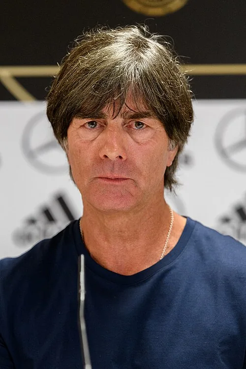

Photo source ↗Granada · CC BY-SA 4.0
The profile
Joachim Löw
Joachim Löw joined Germany’s coaching staff before taking charge of the national team in 2006. His sides used patient possession and quick movement in attack.
Löw worked as Jürgen Klinsmann’s assistant before becoming Germany coach in 2006. He developed a team comfortable with possession, quick combinations and flexible attacking positions.
Löw coached Germany to the 2014 World Cup title. The team beat Brazil 7–1 in the semi-final and Argentina 1–0 after extra time in the final.
2014Brazil
Champion
Group G Germany4 : 0Portugal
- MUELLER Thomas11′ · pen.
- Mats Hummels31′
- MUELLER Thomas45′
- MUELLER Thomas77′
Germanyhome
Starting lineup
- NEUER Manuel
- Benedikt HOEWEDES
- Mats Hummels
- Per MERTESACKER
- BOATENG Jerome
- Sami KHEDIRA
- Mesut OEZIL
- Philipp LAHM
- Toni Kroos
- MUELLER Thomas
- Mario GOETZE
Substitutions
- 62′Andre SCHUERRLE on · Mesut OEZIL off
- 72′Shkodran MUSTAFI on · Mats Hummels off
- 81′Lukas PODOLSKI on · MUELLER Thomas off
Portugalaway
Starting lineup
- RUI PATRICIO
- BRUNO ALVES
- PEPE
- FABIO COENTRAO
- JOAO PEREIRA
- MIGUEL VELOSO
- JOAO MOUTINHO
- RAUL MEIRELES
- CRISTIANO RONALDO
- HUGO ALMEIDA
- NANI
Substitutions
- 27′EDER on · HUGO ALMEIDA off
- 45′RICARDO COSTA on · MIGUEL VELOSO off
- 64′André ALMEIDA on · FABIO COENTRAO off
Group G Germany2 : 2Ghana
- Mario GOETZE50′
- Miroslav KLOSE70′
- Andre AYEW53′
- Asamoah GYAN62′
Germanyhome
Starting lineup
- NEUER Manuel
- Benedikt HOEWEDES
- Mats Hummels
- Per MERTESACKER
- BOATENG Jerome
- Sami KHEDIRA
- Mesut OEZIL
- Philipp LAHM
- Toni Kroos
- MUELLER Thomas
- Mario GOETZE
Substitutions
- 45′Shkodran MUSTAFI on · BOATENG Jerome off
- 68′Miroslav KLOSE on · Mario GOETZE off
- 69′Bastian SCHWEINSTEIGER on · Sami KHEDIRA off
Ghanaaway
Starting lineup
- Fatawu DAUDA
- Jonathan Mensah
- John Boye
- Harrison Afful
- Christian ATSU
- Andre AYEW
- Sulley MUNTARI
- Mohammed RABIU
- Kwadwo ASAMOAH
- Asamoah GYAN
- Kevin-Prince Boateng
Substitutions
- 51′Jordan Ayew on · Kevin-Prince Boateng off
- 71′Mubarak Wakaso on · Christian ATSU off
- 77′Emmanuel BADU on · Mohammed RABIU off
Group G United States0 : 1Germany
- MUELLER Thomas54′
United Stateshome
Starting lineup
- Tim HOWARD
- Omar GONZALEZ
- Matt BESLER
- DaMarcus BEASLEY
- Fabian JOHNSON
- Michael BRADLEY
- Jermaine JONES
- Brad DAVIS
- Kyle BECKERMAN
- Graham ZUSI
- Clint DEMPSEY
Substitutions
- 58′Alejandro Bedoya on · Brad DAVIS off
- 83′DeAndre YEDLIN on · Graham ZUSI off
Germanyaway
Starting lineup
- NEUER Manuel
- Benedikt HOEWEDES
- Mats Hummels
- Per MERTESACKER
- BOATENG Jerome
- Bastian SCHWEINSTEIGER
- Mesut OEZIL
- Philipp LAHM
- Toni Kroos
- Lukas PODOLSKI
- MUELLER Thomas
Substitutions
- 45′Miroslav KLOSE on · Lukas PODOLSKI off
- 75′Mario GOETZE on · Bastian SCHWEINSTEIGER off
- 88′Andre SCHUERRLE on · Mesut OEZIL off
Round of 16 Germany2 : 1Algeria
- Andre SCHUERRLE91′
- Mesut OEZIL119′
- Abdelmoumene Djabou120′
Germanyhome
Starting lineup
- NEUER Manuel
- Benedikt HOEWEDES
- Per MERTESACKER
- BOATENG Jerome
- Shkodran MUSTAFI
- Bastian SCHWEINSTEIGER
- Mesut OEZIL
- Philipp LAHM
- Toni Kroos
- MUELLER Thomas
- Mario GOETZE
Substitutions
- 45′Andre SCHUERRLE on · Mario GOETZE off
- 69′Sami KHEDIRA on · Shkodran MUSTAFI off
- 108′Christoph Kramer on · Bastian SCHWEINSTEIGER off
Algeriaaway
Starting lineup
- MBOLHI Rais
- Faouzi Ghoulam
- Esseid BELKALEM
- Rafik HALLICHE
- Aissa MANDI
- Medhi LACEN
- Saphir TAIDER
- Mehdi MOSTEFA
- Sofiane Feghouli
- Islam Slimani
- SOUDANI El Arabi
Substitutions
- 77′BRAHIMI Yacine on · Saphir TAIDER off
- 96′Madjid BOUGUERRA on · Rafik HALLICHE off
- 99′Abdelmoumene Djabou on · SOUDANI El Arabi off
Quarterfinal France0 : 1Germany
- Mats Hummels12′
Francehome
Starting lineup
- Hugo Lloris
- Mathieu DEBUCHY
- Patrice EVRA
- Raphael VARANE
- Mamadou SAKHO
- Yohan CABAYE
- Mathieu Valbuena
- Blaise Matuidi
- Paul Pogba
- Karim Benzema
- Antoine Griezmann
Substitutions
- 71′Laurent KOSCIELNY on · Mamadou SAKHO off
- 72′Loïc RÉMY on · Yohan CABAYE off
- 84′Olivier Giroud on · Mathieu Valbuena off
Germanyaway
Starting lineup
- NEUER Manuel
- Benedikt HOEWEDES
- Mats Hummels
- BOATENG Jerome
- Sami KHEDIRA
- Bastian SCHWEINSTEIGER
- Mesut OEZIL
- Philipp LAHM
- Toni Kroos
- Miroslav KLOSE
- MUELLER Thomas
Substitutions
- 68′Andre SCHUERRLE on · Miroslav KLOSE off
- 82′Mario GOETZE on · Mesut OEZIL off
- 90+1′Christoph Kramer on · Toni Kroos off
Semifinal Brazil1 : 7Germany
- OSCAR89′
- MUELLER Thomas10′
- Miroslav KLOSE22′
- Toni Kroos24′
- Toni Kroos25′
- Sami KHEDIRA28′
- Andre SCHUERRLE68′
- Andre SCHUERRLE78′
Brazilhome
Starting lineup
- JULIO CESAR
- DAVID LUIZ
- MARCELO
- DANTE
- MAICON
- FERNANDINHO
- OSCAR
- LUIZ GUSTAVO
- HULK
- Fred
- BERNARD
Substitutions
- 45′RAMIRES on · HULK off
- 45′PAULINHO on · FERNANDINHO off
- 69′WILLIAN on · Fred off
Germanyaway
Starting lineup
- NEUER Manuel
- Benedikt HOEWEDES
- Mats Hummels
- BOATENG Jerome
- Sami KHEDIRA
- Bastian SCHWEINSTEIGER
- Mesut OEZIL
- Philipp LAHM
- Toni Kroos
- Miroslav KLOSE
- MUELLER Thomas
Substitutions
- 45′Per MERTESACKER on · Mats Hummels off
- 57′Andre SCHUERRLE on · Miroslav KLOSE off
- 76′Julian Draxler on · Sami KHEDIRA off
Final Germany1 : 0Argentina
- Mario GOETZE112′
Germanyhome
Starting lineup
- NEUER Manuel
- Benedikt HOEWEDES
- Mats Hummels
- BOATENG Jerome
- Bastian SCHWEINSTEIGER
- Mesut OEZIL
- Philipp LAHM
- Toni Kroos
- Christoph Kramer
- Miroslav KLOSE
- MUELLER Thomas
Substitutions
- 30′Andre SCHUERRLE on · Christoph Kramer off
- 87′Mario GOETZE on · Miroslav KLOSE off
- 119′Per MERTESACKER on · Mesut OEZIL off
Argentinaaway
Starting lineup
- Sergio ROMERO
- Ezequiel GARAY
- Pablo ZABALETA
- Martin DEMICHELIS
- Marcos ROJO
- Lucas BIGLIA
- Enzo PEREZ
- Javier MASCHERANO
- Gonzalo HIGUAIN
- Lionel MESSI
- Ezequiel LAVEZZI
Substitutions
- 45′Sergio AGUERO on · Ezequiel LAVEZZI off
- 77′Rodrigo PALACIO on · Gonzalo HIGUAIN off
- 85′Fernando GAGO on · Enzo PEREZ off